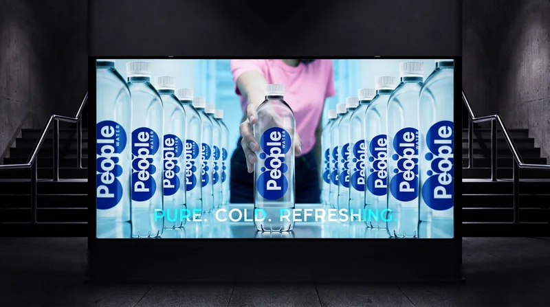
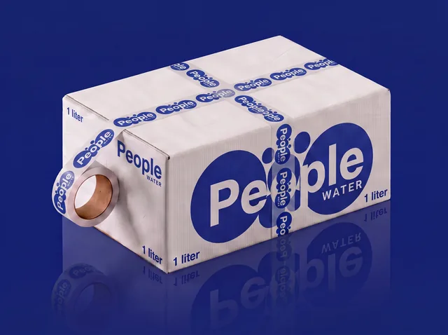
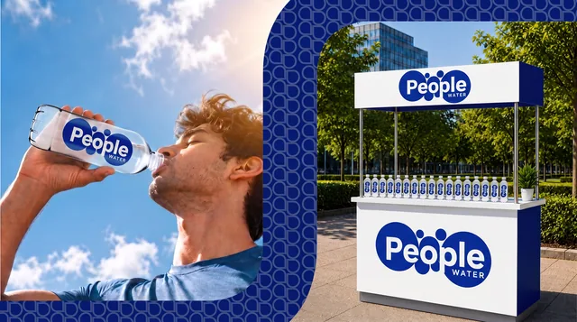
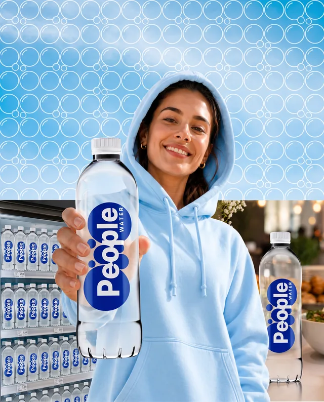
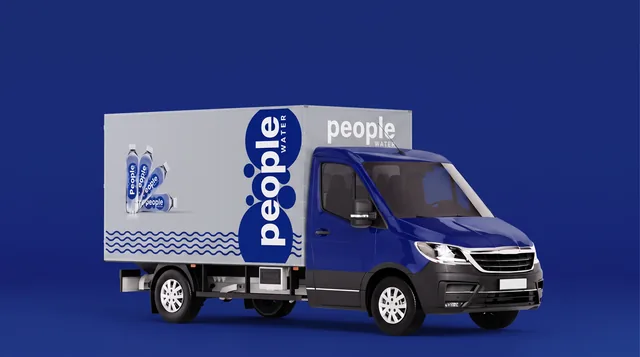

Bottle identity
A bold label system that stays legible and recognisable in product photography and retail.
Selected project · Product and packaging design
A bottled water identity designed to stay bold from shelf to street.

01 / The direction
The oversized People wordmark makes the bottle immediately identifiable, while the blue-and-white palette connects directly with freshness and hydration. The design remains simple enough to work on a single bottle but distinctive enough to scale into a wider campaign system.
The project demonstrates the identity across product photography, social ads, retail installations, cartons and vehicle graphics, creating a complete visual ecosystem rather than a single packaging mock-up.
A bold label system that stays legible and recognisable in product photography and retail.
Applications across individual bottles, cartons and multipack formats.
Point-of-sale, outdoor and social visuals built from the same core identity.
Vehicle graphics that extend the product system into distribution and street visibility.
02 / Selected work



